Shoutouts
Shoutout to “The Ravenkeeper” and “The North bay trrasher” for finishing their first marathons!! And shoutout to “The Dentist” for PRing on the half.
Monday
Once I finished doing my part for a stronger and more robust skynet I went over to “The Awepartment’s” place to meet up with him, “The Philosopher” and “The Mosher” to make Plov. Well more accurately for “The Awepartment” to make Plov. He told me he wanted to try making the dish and see how his version compared to mine. I definitely found his version to be more of a biryani than a Plov based on the spice profile but it definitely hit the spot.
“The Awepartment” mentioned that someone sent him this shirt to celebrate him reaching the end of his cliff at Microsoft
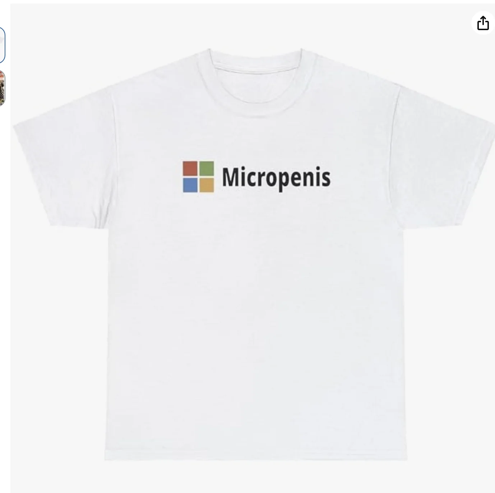
It was unknown who sent him this for a while. He mentioned he went through all the usual suspects and asked if they did and they all said no. Later the culprit revealed themselves and it happened to be me
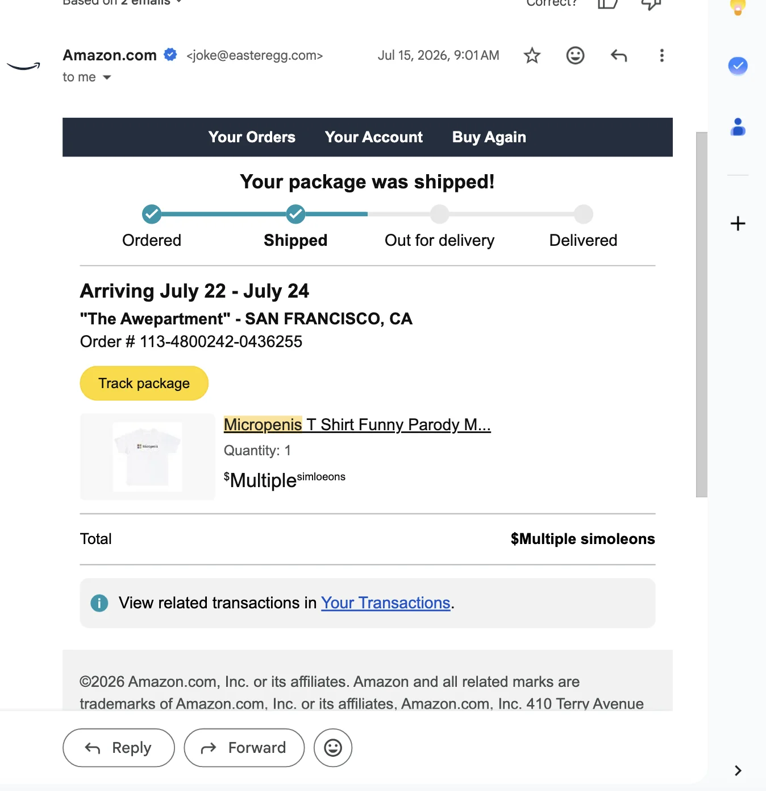
I wanted to not tell him until the newsletter came out but I found myself lacking in impulse control.
Also I’m trying to recruit “The Philosopher” to come work at my company so I walked him through some of the job descriptions that we have to see what makes sense and helped him target his resume a bit towards them.
At the same time “The Philosopher” wanted to refine my prompts for Hinge. The biggest one he wanted to update was to have me use the prompt “I want someone who” and then come up with qualities that I uniquely would want in a partner. Naturally this rules out things like “being kind and considerate” which are generally considered universal. Perhaps if I said “I wanted someone unkind and rude because I’ve been conditioned to think that that is how love works” that would have been unique enough to put in but that would have required me to feel that way. So I brainstormed a bunch of things and eventually the version I settled on was
Towards the end of the night I had a hard time staying awake and dozed off for a bit on “The Awepartment’s” couch. One thing about me when I get super tired is that I start just babbling stream of consciousness (or chain of thought as “The Awepartment” put it), and saying anything and everything that comes to mind. I didn't say anything of particular note
Tuesday
Today’s day terminally on iTerm2 is rather interesting because towards the end “The Philosopher” joined us for company dinner. As I mentioned yesterday I’m trying to recruit “The Philosopher” to join me in the mines and we sometimes have potential recruits join for company dinner so I thought this would be a good way to get him to meet more of the team and gauge his interest in the company.
Normally when we get dinner a short poll goes out on Slack for different options we vote on.
The options were Thai, Uzbek, Dumplings, Indian. In a vacuum I would have voted for Uzbek however unfortunately the leading option was Thai. Anyone who knows “The Philosopher” knows he is deathly allergic to peanuts and can’t eat anything with them. I wasn’t quite sure what to do here: should I outright tell the person that since my friend who is coming can’t have peanuts we need to remove the option entirely? I wanted to first handle this by trying to get support for dumplings since that was the second most popular option so I voted for dumplings even though my heart was with the Plov. Like it always is. As the poll inched on it looked like Thai was just barely winning. At this point I told the person placing the order about the situation and she said she always tries to order things without peanuts because another coworker is also allergic to nuts. I thought this might be ok so I let things play out. She also asked me if he couldn’t be in the same room as peanuts. I said no, it was fine as long as he didn’t eat them
When “The Philosopher” got to the office he did say that since he has an epi pen he doesn’t wanna risk it with Thai food. My manager shot me a bit of a look and I maybe shoulda played it a bit differently but it was what it was. “The Philosopher” had an hour long chat with one of the cofounders who said “The Philosopher” seemed good so I’m excited to see what could happen here.
Wednesday
After another bout of doing the dance known by some as the corp trorp I went to a knife skills class with “Top of the Rope”. It wound up being me, her, two other students, and the instructor. The premise of the class is we learn some basic cuts and apply them to different vegetables. We went carrots, cucumbers, onion, garlic, and ginger. The most important thing I learned in the class is how to position my non cutting hand when cutting the knife since that is the hand that is more at risk when cutting. The biggest trick is to keep your fingers firm so there is a nice ridge that the knife can come into contact with. Also it’s important to keep the thumb from creeping up toward the fingers. You need to keep the thumb in the back.
The basic cuts center around leading with the tip of the knife or the belly of the knife. We started with the carrot and learned to cut the carrot in a few different ways. First came the circular cut in which we take the carrot and cut it down the side and you get some nice circular pieces. If you take some big cuts of carrot and cut them in the opposite direction you wind up with rectangular pieces of carrot. These are called batons. If you take these slices and cut them further into small rectangular strips this is julienne.
With the cucumber one cool thing I learned is that if you peel the cucumber in strips going around with about an inch between strips you get this cool alternating pattern that’s pretty aesthetic. Also while cutting the cucumber you can cut in triangle slices by making diagonal rather than horizontal cuts.Noke of these things really take advanced knife technique per say so much as knowledge of different configurations you can make.
After the cucumber we got to the onion. I can’t really remember much about the actual onion here.
The one thing the instructor said which stuck out was he told people to imagine their fingers are caught in a chinese finger trap and then to excuse him for using a “racist term” which feels surprising since I always thought they originated in China and it wasn’t really racist to call them that. I did some digging later and from what I could find the toy itself actually originated in 19th century Europe with some German name (Mädchenfänger) and in the 1950s an Ohio newspaper ran an ad advertising them as a Chinese finger trap because they thought if they added Chinese to the front of it it would make it sound more exotic. Kinda like the trend of adding AI to the end of a company name today. While “racist” isn’t quite the term I would use I do think there is something to be said about that practice and now I know that they are not in fact Chinese.
We then get to the garlic and the instructor emphasizes that if you want to get some really fine pieces you can take some water and have the garlic soak it up and then do this a neat cut where you flip the knife over and cut the opposite of how you normally would. I wasn’t able to get this cut quite right myself but from what I saw from others it looked really good.
Finally we had the ginger and here I also couldn’t remember anything of particular note.
Overall I quite liked the class. My main feedback would be that it can be a bit hard for me to learn some of the specifics based on what the instructor is saying and I can’t always tell how I should be holding things based on seeing him do it. This is a me thing but it often takes me a while to learn by watching others. I think I’m somewhat worse at this than average actually.
Thursday
After another day suffering from success I went to bar night with “The Orchestra,” “The Philosopher,” “The Best,” “The Awepartment,” “Generic White Guy,” “That’s nuts,” “The Mosher”, “The Finer things,” and a few others. Sadly “The Orchestra” is leaving us for more concrete pastures on the East Coast. Specifically New York to go create a startup. I’m excited to see what he does!
Someone was asking me about gold stars that I said I would give them which made me realize that I now need to keep my pack of gold stars in my fanny pack at all times so I’m always ready to give someone a gold star. You never know when they may come in handy!
Friday
Once I finished mining for the simoleons I got KBBQ with “The Quant”. The last time we did this we were both weak and tapped out after only eating about 8 meat dishes between the two of us which is pretty bad. Thankfully this time we got back to our usual form of about 15 for an average of 7 dishes per person meaning that we still got it :D.
Saturday-Sunday
The day began with trash pickup with “Bleaching to the choir” and some others. Today the nerves started to set in as the impending ultra marathon approached. Fear started to creep up on me like a specter following me around. A little munchkin goblin that would spew negative aura my way.
I ignored that as best as I could and met up with “The Hombre” who happened to be in the city working on some NeurIPs rebuttals. He went to see The Odyssey this morning and told me I should go see it. This led us to a debate about what counts as “seeing” a movie. For context I went to go see a movie with him a few years ago and I took a nap during it and left to go get boba part way through and apparently that doesn’t count as “seeing” the movie because *apparently* you need to see all of it for it to count. I disagree with this assessment and when I told him I would potentially go to see The Odyssey today so I could nap before the ultra tonight he said it wouldn’t count.
As part of this debate I mentioned that I was really looking forward to seeing Dune 3 at the end of the year because of Dune 2. I went to see Dune 2 way back in the prenewsletter days with “The Professor,” “The Quant,” “The Plower,” “Mirandom thoughts” and some others and I wrote a review of the movie which according to him would indicate that I hadn’t seen it. Because I’m really proud of this review I’m gonna leave it here and let you all decide for yourselves whether I have or haven’t seen Dune 2
After evaluating the circumstances I decided to make a pivot from watching that movie to well not that. Since we like to chat about movies afterwards I wrote up a review which encompasses what I saw.
The movie opens with a war between some people. Some with tubes on their faces and some with masks. Presumably the conflict was about who looked cooler and since it was obviously the mask people thats who I rooted for. The fight scenes there were cool.
Theres lots of yapping that doesn’t really make sense and feels kinda boring. Doesn’t help that most of the characters felt like they had the emotions of a log so I was like “what the heck”
The movie then takes a nosedive when they have zendaya and someone talking which I think is supposed to set up a trite love story of some sort. They have some really inefficent way of walking in the desert which seems dumb. If they were walking to Redwood City that way they’re ngmi. Also doesn’t help that love interest to zendaya is supposed to be some chosen one dude which is a trope I don’t quite like and of all the chosen ones I’ve seen he was one of the more boring ones. He’s kinda like the boba place at the Metreon of chosen ones which will make more sense soon.
The trite love scene made me take a break and get some boba from the place in the Metreon. I got a mango passionfruit green tea and boy did it suck. It was really syrupy and didn’t taste like fruity at all. While the tea was atrocious it did give me a metaphor for the movie “syrupy with no substance”. If you’re gonna take a boba break in the middle of the movie next time I recommend making the effort to go the place in Westfield instead its well worth it.
I come back and I see what looks like Voldemort society with a bunch of people watching a fight. You have fat Voldemort overseeing things and young Voldemort fighting. The fight scene was probably the best part of the movie. After the fight scene I realized that they weren’t actually pasty white (which is what made them look like Voldemort in the first place). I was pretty disappointed by this and hoped there was something that would make me want to stay. There wasn’t.
All in all it was a syrupy experience. A solid Duneot watch
I think this stands as one of the best reviews I’ve ever written personally. He said that because I “left in the middle”, “fell asleep”, and “left again before the movie ended” apparently I haven’t seen the move but I think all the educated amongst you all would realize that that is a big fat lie and I have in fact seen it as evidenced by the amazing review I left above.
We hung out for a while and caught up on life. I promised him I would go to see The Odyssey at some point but apparently I need a chaperone to make sure I don’t do anything he would object to. If anyone wants to watch The Odyssey let me know. “The Quant” when you get back from the land of the Hong and the home of the Kongs you’re on the list of people I’m asking. “The Hombre” also approved of you.
The nerves really started to set in now and I went home and chilled for a while and finished last weeks newsletter. I set aside this time to chill before the gauntlet of the ultra marathon.
Eventually the time came and I headed out. Unlike the other races the ultra marathon comes with a pre race meeting to go over logistics and do a gear inspection. For the ultra you are required to have a reflective vest and headlamp. Because this race starts at 10PM at night you will be running in the dark and possibly alone for a very good stretch of it. I go to the Hyatt hotel by Embarcadero for the pre race meeting and as you can tell by this picture I’m very exctied
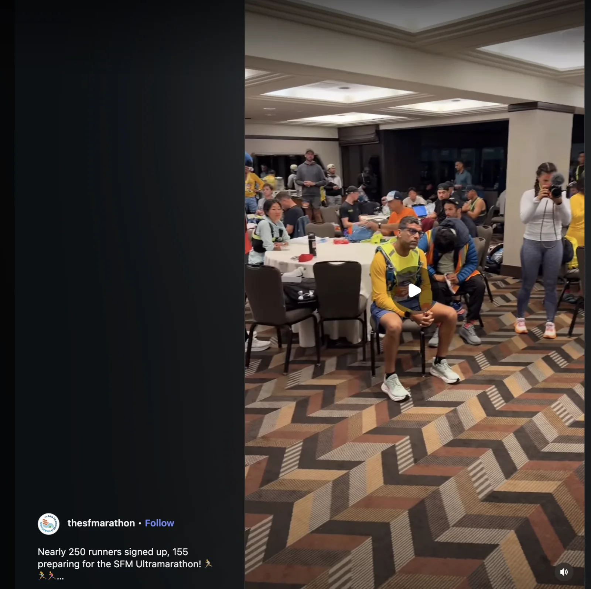
They say running fits are important so here is a picture of mine (this is the closest I’ve come to feeling like an ig influencer)
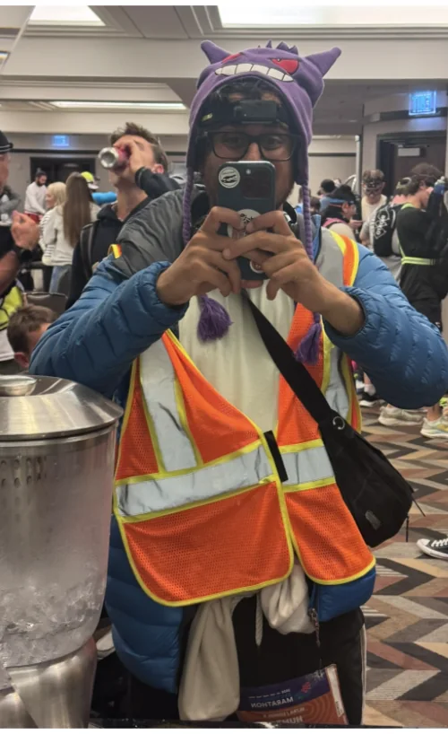
I think from this picture alone you can see why I’m not an ig influencer.
That aside I figured if I was doing something grueling like a half marathon I should make it fun and wear a gengar hat.
Eventually the race starts. Before we get into it lets go over the course a little bit so we’re all on the same page. The ultra marathon is broken into two marathons
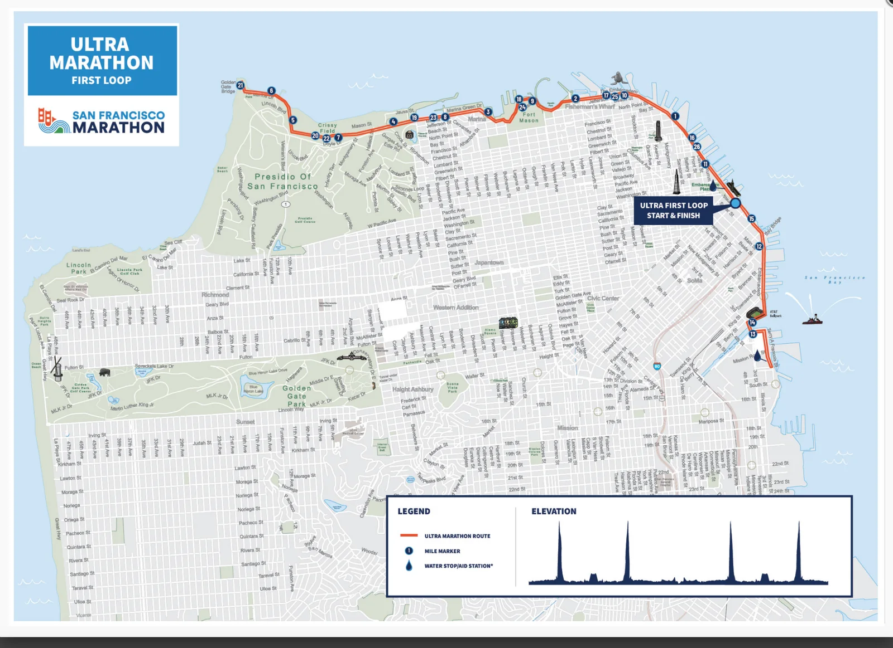
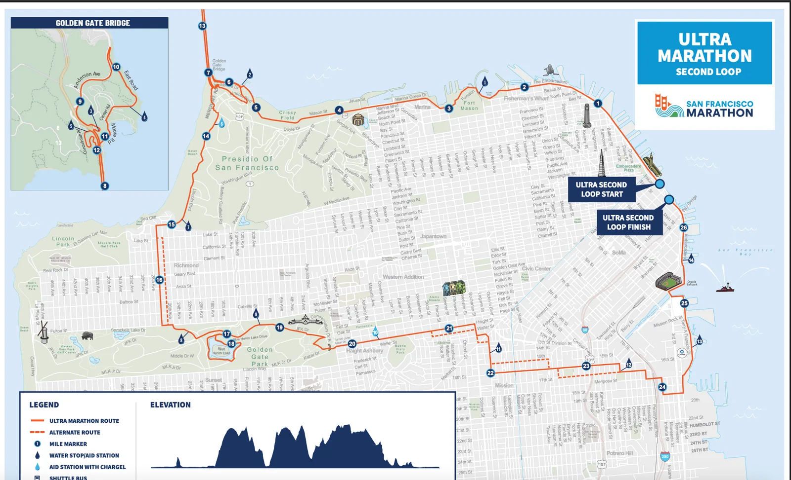
The first marathon is multiple out and backs. Two going from Ferry building to Golden Gate bridge and one going from Ferry Building to Chase Center.
Feeling like I can rule the world
I head out strong at an 11-12 minute pace. Of course I can run faster than this but the goal is to pick a pace that won’t tire me out. I go on like this for a while for about 6 miles feeling quite good. The race starts at the Ferry building and I head out from there towards the Golden Gate bridge. I make it a point to not run up any hills since my goal is to last as long as possible and conserve energy. As I make it up the hill between The Ferry Building and Fort Mason I notice that my gengar hat is gone :(. It’s sad but I will have to continue on in its stead. The gengar hat never had a name but for no reason whatsoever I’ll name it Joe retroactively. Maybe because it’s all Joever for the hat. I don’t know. Anyway I continued strong. Unfortunately I’m starting to heat up and the headlamp is more annoying than useful so I decide to take it off for the time being. Once I go past Fort Mason I reach a flow state and I’m feeling in the zone. During my half last year I focused more on intense music to pump me up and push me forward. This time I focused more on relaxing and taking my mind off the task at hand so I put on a One Piece chapter review of the latest manga chapter from one of my favorite One Piece youtubers. It’s wild that *those weapons* made an appearance! I never would have thought *that character* came back.
I make it out to the Golden Gate bridge and head back to the Ferry building. Along the way I hear people talking about AI and I immediately sigh. Really, during the ultra?! This truly is SF I suppose.
The course bore hill will
As I head back towards Fort Mason about 8 or 9 miles in I slow to a walk to walk up the hill and find to my chagrin that I can’t start running again after I stopped. I didn’t feel tired when I stopped to walk up the hill but then somehow my legs just didn’t want to go. I decided to take a bit more of a break and keep walking further and eventually I did get back to running. As I head along Fisherman’s wharf I start to see people going back toward the Bridge in the opposite direction which while not unexpected per se doesn’t do the most for morale. Like holy crap these people are already 5 miles ahead of me. These beasts. These machines. Anyway I need to focus on running my own race here which is important since as you can tell from the above I was having a hard time even running it.
Do I continue?!
I get back to the Ferry building around mile 11 and take a break which has me getting a bit of cold feet. I could start to feel my knees hurt. If this was the half I did last year I could definitely power through and finish. But now? Now I have not just a marathon to finish but a brand new one on top of that. I agonize for a little bit and talk with one of the volunteers there named Tony. Don’t let a name like Tony fool you because it turns out he converted to Islam a while ago which was pretty interesting. He’s a really nice guy. We talked about life, he asked me if I trained for this and I said no. He said no pressure but if I want to continue I am free to stop when I want. Eventually I do decide to continue and at this point I really want to highlight how supportive the ultra community was. Whenever I ran by someone they always said “Good job!” which I really appreciated. It felt like we were a community banding together to take down the beast. I didn’t notice this from the people who I saw back near Fisherman’s wharf but I assume they must have been really dialed in and I don’t begrudge them for that.
I continue on with another burst of wind and 4 miles later I make it back to the Ferry building with the same conundrum again. After stopping I found starting to be nigh on painful now. I knew I couldn’t run the whole rest of this first marathon let alone the second. I knew there would be pain. Pain. Pain. Pain. I tried walking some and I figured I *could* walk the rest of the first marathon but what would that cost me later?
Pain. Pain. Pain. Physical pain. Mental pain. The pain of failure. Pain. Pain. Pain.
I’m honestly disappointed in myself. I really thought I could pull this off. I WALKED FOR 60 MILES DANG IT. I SHOULD HAVE RESOLVE. WITH ENOUGH WILL I SHOULD BE ABLE TO POWER THROUGH ANYTHING. I JUST HAVE TO BELIEVE.
Belief was not enough. I realize at this point I’m already feeling it and it’s gonna get worse before it gets better.
With regret in my heart I drop out after 15 miles. On the plus side this is still the most I’ve ever run in my life beating last year’s record of 13.2 miles during the half last year. But unlike then finishing most of a marathon doesn’t get you the same feeling of accomplishment.
It’s 2 in the morning now. My sleep is gonna be wrecked either way. Ah well. I pick up my backpack from the Hyatt and head on home. Apparently the Waymo back was $47 compared to a $24 Uber which is insane.
After 4 hours of sleep I wake up to my knee throbbing on fire. The pain feels good in a weird way because I think it validates my decision to quit. I truly was at my physical limit and would have been in more pain had I continued. I pride myself on being tenacious and this does concern me that maybe I didn't have the resolve but the fact that I feel such pain is a good sign that it’s not my will that was lacking. Hopefully anyway.
I get out of bed a bit later and do what Uncle Iroh did in Avatar when he returned to Ba Sing Se and go back to the Ferry building to cheer on “The Dentist” along with “La Tacqueria Royalty,” “The Enabler,” and another friend of “The Dentist”
“The Dentist” smashed her previous record which was great! Afterwards we all went to go get brunch. Originally I was going to not eat so I can write a Yelp review about the experience but considering I haven’t eaten a meal in over 16 hours and I did do the half marathon++ I should eat something. I can’t believe I’m forgoing a bit here.
We go to Hayes Valley and get food at a brunch place that has a pretty reasonable eggs benedict. I won’t say it’s my favorite dish in the world but it’s pretty solid. We’re also joined by “Always up for a disc-ussion”. One thing I forgot to do was carboload which may have helped in retrospect. There are a bunch of little tricks and if I do something like this again I may need to actually plan properly.
After hanging out for a while I go back home and chill and do nothing.
A few hours later I went to a housewarming party hosted by one of “The Raja of Rhythm’s” coworkers. Originally I wasn’t gonna go because I’m feeling beat up but then “The Menace” said he would save me a chair and how could I turn down an invitation like that. I go and see “The Raja of Rhythm,” “The Raja of Rhythm’s younger brother,” “Hell Yeah,” “The Menace," “The Menace's friend from Connecticut,” “Bleaching to the choir,” and some others. It was great to see everyone and regale them with the night of terrors above.
While at the party I got into an interesting discussion about evolution and how wild it is. For example there was a species of birds that went to an island and their descendants evolved in a particular way. Those same birds went to the island again after their descendants got wiped out and still evolved the same way which is crazy! Also there are cacti that have evolved similarly in different parts of the world to adapt to the same environmental challenges. Like what are the odds the same pattern would come up multiple times?!
I also learn that the UK is having a problem because London is the only major city in it that people go to to advance their upward mobility which means many other cities in the UK are declining which is unfortunate.
Personal training progress for the week
Charts below show progress through 7/23/2026 for every exercise from the 7/23/2026 workout. The metric is average load per rep across the logged sets rather than total volume.
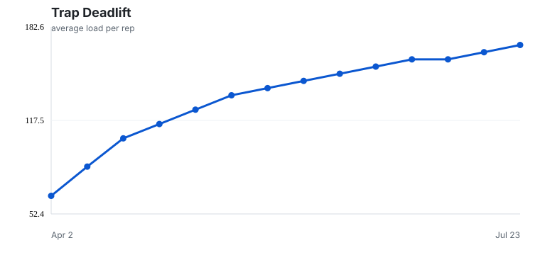
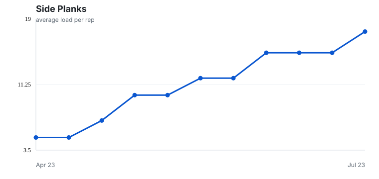
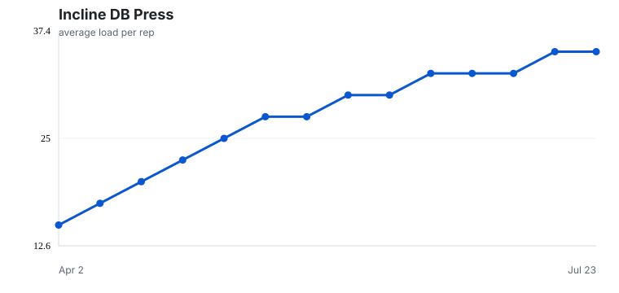
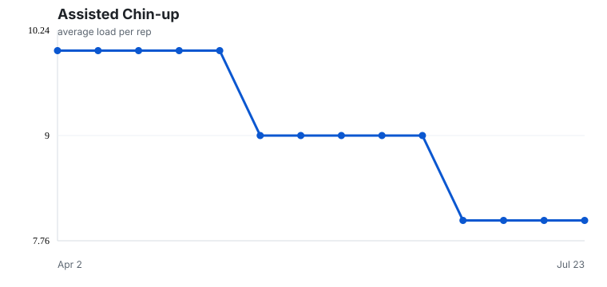
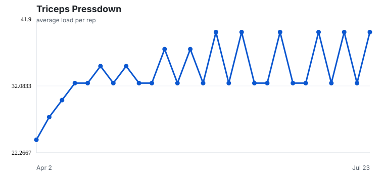
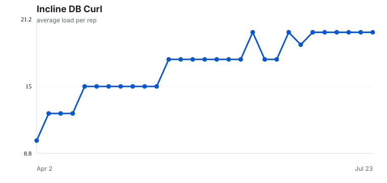
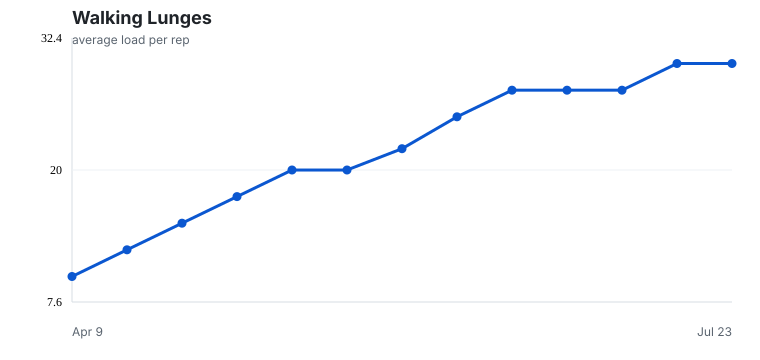
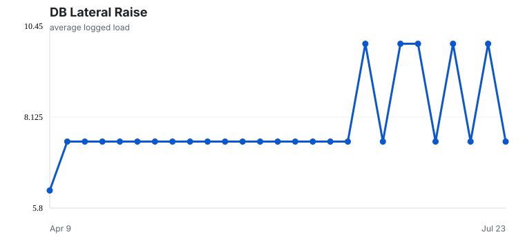